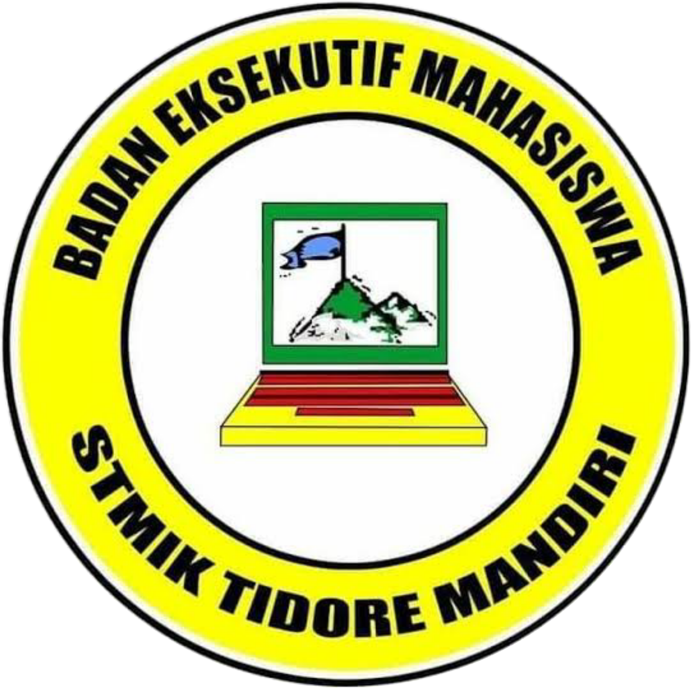

Program kerja yang dirancang untuk mahasiswa dan kampus
Mengadakan pelatihan desain grafis, pemrograman, dan pengelolaan media digital bagi mahasiswa.
Menghadirkan narasumber profesional untuk berbagi wawasan tentang teknologi, bisnis, dan kepemimpinan.
Kegiatan sosial yang melibatkan mahasiswa dalam membantu masyarakat sekitar.
Menyelenggarakan berbagai kompetisi akademik maupun non-akademik untuk meningkatkan prestasi.
Menampung dan menyampaikan aspirasi mahasiswa kepada pihak kampus secara terbuka.
Program yang melibatkan mahasiswa dalam kegiatan edukasi dan pemberdayaan masyarakat.